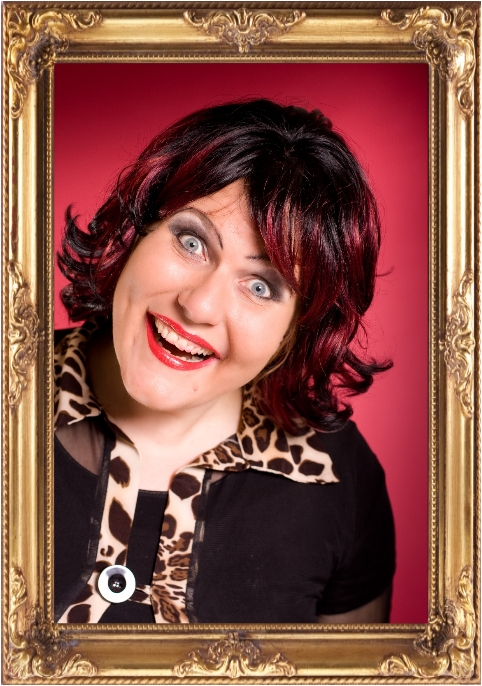

Toos
Het gezellige familiehart. Dol op bingo, aandacht en romantiek. Als de spotlights aangaan weet Toos: dit is háár moment.
Meer over Toos
Toos Trico is het kloppende familiehart van 100% Trico. Een echt gezelligheidsdier dat het liefst onder de mensen is. Geef haar een buurtbingo, een kop koffie en een tafel vol bekenden en Toos heeft een topavond. Al helemaal als er iets te winnen valt.
Thuis kan ze uren verdwijnen in haar grote liefde: diamond painting. Steentje voor steentje werkt ze geduldig aan de mooiste kunstwerken. Een geduld dat ze in de liefde overigens een stuk minder heeft… want Toos is snel verliefd. Een leuke blik, een beetje aandacht en voor je het weet heeft ze de trouwlocatie in haar hoofd al uitgezocht.
Ook is Toos gek op tv-quizzen. Vanuit de bank weet ze opvallend vaak het juiste antwoord en begrijpt ze werkelijk níéts van kandidaten die het fout hebben. Zelf meedoen? Graag! Want naast slim zijn – al krijgt ze thuis niet altijd de kans dat te bewijzen – staat Toos ook maar wat graag in de spotlight.
Familie, gezelligheid, bingo, glittersteentjes, televisie én een beetje romantiek: dat is Toos. En zodra de muziek begint en de spotlights aangaan, weet ze één ding zeker:
Dit is míjn moment. Adrie, aan de kant!